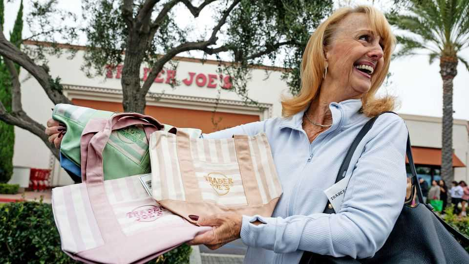

Why your favourite bakery and coffee shop now sell tote bags
The business of merchandise is no longer a Mickey Mouse operation

Oct 8th 2026
From tulips and orchids to Beanie Babies and Pokémon cards, human beings are no strangers to manias. But among the strangest is the current craze for mini totes from Trader Joe’s, an American grocery shop. The release on September 30th of the limited-time Halloween bags—which cost $2.99 and are about the size of an iPad—prompted huge queues outside shops across America. Some Trader Joe’s locations have imposed a strict limit on the number of bags per customer. (People do not seem to mind that the totes are too small to be very useful.) Enthusiasts are turning to resale websites, where they are listed for between $20 and a wishful $50,000.
Merchandise—or “merch”, to use the trendy term—seems to be everywhere, for everything. Oxford Economics, a research firm, estimates that $338bn a year is spent globally on the stuff. (Their rather broad definition includes licensed products, clothing, branded goods and print-on-demand items.) All kinds of companies are peddling such wares, from bakeries and bookshops to household brands and hardware shops. Even tech firms are joining in. Palantir dropped tennis whites adorned with its logo in July. Recently OpenAI launched its first publicly available clothing line. “This is the best way to get bullied in public,” one X user scoffed.
Merch, of course, is not a new thing. It has long been common in three areas. One is children’s products—as any parent who has had to fork out for an Elsa dress or Buzz Lightyear toy will know. Another arena is music. Barclays, a bank, predicted Harry Styles’s fans would splash out £100 ($135) each at the London leg of the singer’s tour this summer. Merch is also a winning source of revenue for sports teams. New York is still awash in blue-and-orange apparel, the colours of the Knicks, the city’s victorious basketball team. Arsenal, a Premier League team, saw its kit and merchandise revenue grow by 26%, to £130m, during the 2024-25 season.
Today, however, a much wider range of businesses are using merch as marketing. It helps that making such products is cheap and easy. A tote bag might cost less than $1 to produce in bulk but may be seen by thousands of people during its life cycle. For Daunt Books or Shakespeare and Company, whose totes are loved by the literati, that translates to billions of eyeballs.
Merch also enables companies to present a fun image. Many lean into humour to convey a sense of personality. In June Lidl, a supermarket, released “The Three Lidls Jersey” to coincide with the World Cup. The parody England football strip was made from a liquid- and odour-resistant fabric: all the better to withstand showers of beer from fellow exuberant fans. It sold out in 55 seconds.
For consumers, branded gear can be a way of showing support for a beloved local business, a trend spurred by the pandemic. Jared Watson of New York University says the merch trend also marks a change in how young people are “signalling” through their clothes and accessories. Growing up in the digital age has changed their consumer psychology, he says. Clothing brands can seem generic. Now the urge is to show their individuality through experiences they have had or places they have visited that make them feel special. “Status has changed shape,” agrees Connor Archbold of Tracksuit, a brand consultancy: “You used to signal it with a price tag, a designer label or an expensive watch. Now it runs more on taste and belonging.”
Counter-intuitively, merch worn to stand out is also a means of tying in with a community. Almost half of citizens across the West are not a member of anything, be it a faith group, sports club or other civic organisation. In this socially atomised context, wearing a piece of merch, particularly for something obscure, is the equivalent of being “small fish in a big pond that can find other small fish”, says Mr Watson. For some, the ultimate aim is simply a knowing nod of approval from a stranger.
The next trend is more personal merch. Firms like Etsy have enabled consumers to produce bespoke items such as cups, matches and t-shirts as favours for their birthday parties, hen dos and weddings. This year Architectural Digest wrote about people giving swag to houseguests, asking: “Should your home have its own merch?” The more people prize experiences, the more valuable souvenirs become. Everyone has cottoned on. ■